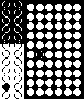
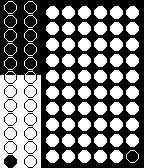

"Contrast Dots" is a watchface for the Pebble Smartwatch. It was designed and created by me, Donnie. It displays the time in a unique way using a grid of dots. There are two sections of dots which have contrasting design. The smaller section black outlined dots on the white background are for displaying the hour. The white dots on the black background are for the minutes.
To read the time, imagine that each section of dots is numbered starting from the top-left corner with increasing numbers going down. In each section, you'll notice a dots that is shaded differently than all the others. That dot indicates the time. For example, the first screenshot below gives the time 11:16 am.


You'll also notice that the "hour" section appears to be multi-shaded. This is a built-in battery meter for the Pebble. If the Pebble's battery is full, then the hour section is white with black circles. As the battery drains, the white background is overtaken by a black one. The screenshots both show a battery level of about 60%.
The watch also emits two short vibrations when the watch connects to bluetooth and one long vibration when it disconnects.
You can check out my other Pebble watchfaces here.